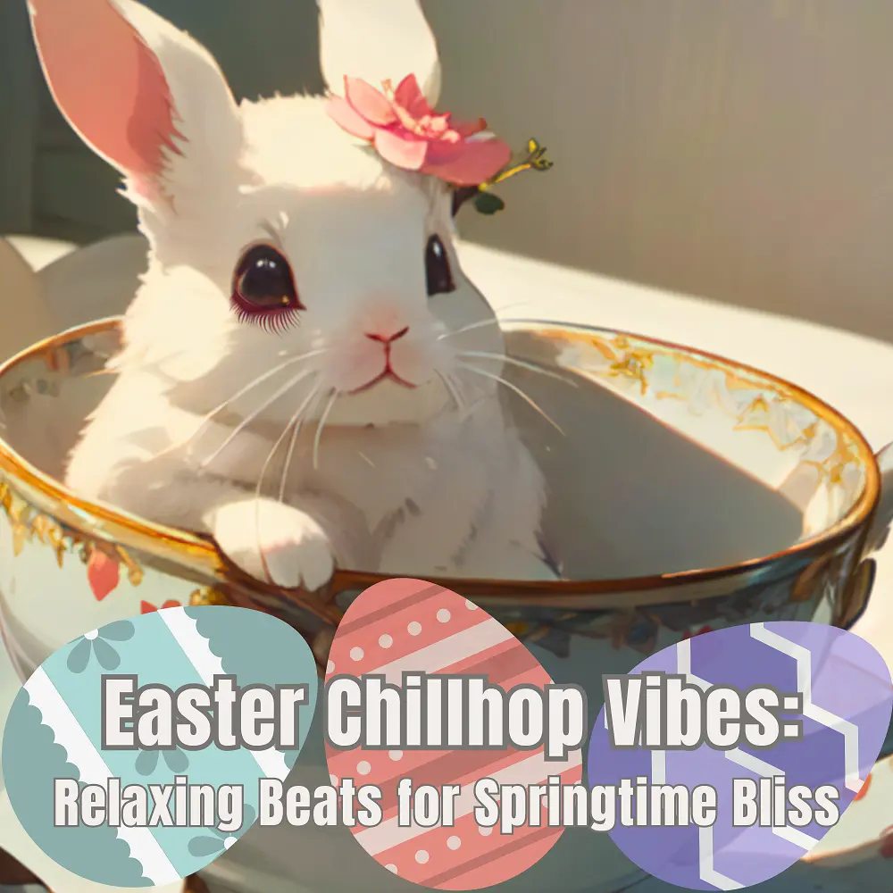

Chillhop
Easter Chillhop Vibes: Relaxing Beats for Springtime Bliss
Nanashino-chan
Explore Easter Chillhop Vibes: Relaxing Beats for Springtime Bliss by Nanashino-chan: 22 instrumental tracks spanning Chillhop. Start with First Sip / Tea Cup Reverie, preview the collection and find your favorites on streaming services.
2025-04-14 · Released · 22 tracks · Instrumental
Preview the album
The jacket stays here until you choose a track. Playback uses YouTube.
YOUTUBE PREVIEW
Choose a track to listen
The jacket stays here until you choose a track. Playback uses YouTube.
If playback is unavailable, open the album or track on the streaming service.
Find this album on streaming services
Links marked “search” open search results. Select the album or track on the service.
Track list 22
- 01First Sip
- 02Tea Cup Reverie
- 03Whiskers & Jazz
- 04Gentle Warmth
- 05Soft Whistle Melodies
- 06Lazy Afternoon Vibes
- 07Hopping Through Chords
- 08Cozy Saxophone Sounds
- 09Vinyl Crackle Bliss
- 10Serene Brew
- 11Smooth Basslines
- 12Rabbit Jazz Groove
- 13Laid-back Melodies
- 14Whiskers in the Rain
- 15Sipping Smooth Jazz
- 16Soft Keys Serenade
- 17Cup of Comfort
- 18Bassline Brew
- 19Warm Groove Reflections
- 20Afternoon Chill
- 21Relaxing Journey
- 22Last Sip of Peace
Find a sound for your next post
Copy “Nanashino-chan + track title” and paste it into your social app’s music search. Availability depends on your region and account. Copying the name does not grant usage rights.